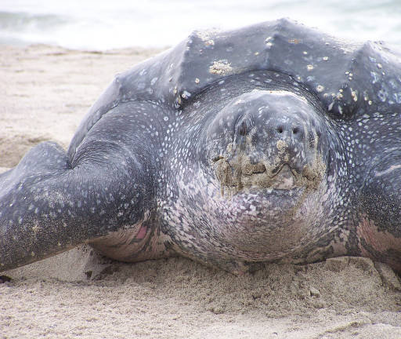

Leatherback Sea Turtle
(Photos from U.S. Fish and Wildlife service)Description
The Leatherback sea turtle is the largest of all sea turtles with an adult weighing 225kg to 905kg and a length of 122 cm to 244 cm. The shell itself isn't a true shell but rather a bunch of small bones covered in a rubbery skin. The turtle is all around black with white spots, however, there is also a pink spot located on the top of the head (Services).
Habitat and Location
In North Carolina it can be found in Beaufort, Brunswick, Carteret, Craven, Currituck, Dare, Hyde, New Hanover, Onslow, Pamlico, and Pender counties. However, being a highly migratory ocean creature they are found in different country worldwide. (Services).
Reasons For Endangerment
The main reason for the population decline would be because of humans taking the eggs and meat for consumption as well as being a part of bycatch in the fishing industry. It is also affected by water population, habitat destruction from coastal development, and being hit by boats and other aquatic vehicles (Public).References
Public Affairs Office NFESO. "Leatherback Sea Turtle (Dermochelys Coriacea)." Leatherback Sea Turtle Fact Sheet. U.S. Fish & Wildlife Service, n.d. Web. 27 Oct. 2016.
Service, U.S. Fish and Wildlife. "Species Profile for Leatherback Sea Turtle (Dermochelys Coriacea)." Species Profile for Leatherback Sea Turtle (Dermochelys Coriacea). U.S. Fish & Wildlife Service, n.d. Web. 27 Oct. 2016.